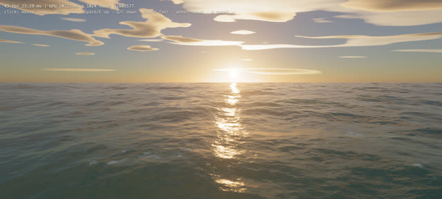

WebGPU check
Does a WebGPU page actually draw something in headless Chrome, with nothing in the console? You would think
chrome --headless --screenshot answers that. It does not. A WebGPU page starts asynchronously
(adapter, device, shader compile), and Chrome's one-shot flags either freeze the clock or stop waiting. Both
gave me a screenshot and a clean console of a page that had not started. This script drives Chrome over the
DevTools protocol on a real clock, waits, and then judges the frame.
Same page, three ways
A 61 KB single-file WebGPU ocean. Grey: the page's own HUD still reads “starting…”. Green: frames per second read from the HUD each second. Same Intel Mac, amd rdna-1 adapter.
The one-shot runs exited cleanly, with a 12,650-byte screenshot and no console errors, on a page that had drawn nothing. Over CDP the first frame arrived by 8.1 s and the sea then held 41 to 43 fps at 1280x577. On this machine about eight seconds go before anything is drawn, so any check that waits less than that will tell you a working page is fine for the wrong reason, and a broken one too.

Pass and fail
A run fails on any of: no navigator.gpu, no adapter, a console error or uncaught exception, or a
frame where one colour covers more than 98% of the screenshot. Exit code 0 pass, 1 fail, 2 could not run.
| Page | Verdict | Errors | Colours | Top colour | Why |
|---|---|---|---|---|---|
| ocean.min.html (61 KB WebGPU sea) | pass | 0 | 139 | 4.6% | renders |
| fixtures/broken.html | fail | 1 | 1 | 100.0% | 1 console error(s) or exception(s); blank frame (100.0% one colour) |
The broken fixture is mine: it gets a device and then misspells a WGSL builtin. What the script caught:
log-warningat 374 ms: Error while parsing WGSL: :1:31 error: expected builtin value nameexceptionat 379 ms: Error: shader: expected builtin value name
The WGSL parse message arrives as a warning, not an error, so the shader failure alone would not fail the run; the page's own throw and the blank frame do. A page that swallows its errors and draws black still fails on the frame.
Use it
node webgpu_check.mjs page.html --wait 12000 --watch "#fps,#err" --out run/ node webgpu_check.mjs https://example.com/demo --size 1920x1080
webgpu_check.mjs needs Node 22 or later and an installed Chrome; no npm install. It writes
results.json (adapter, canvases, per-second text of any selectors you watch, every console event, the
frame test) and shot.png. A temporary profile is made and removed each run. README.
One machine, one window size, Chrome only. The blank test reads the screenshot, not the canvas, so a page that paints a busy HTML overlay over a dead canvas will pass it. Numbers drawn from runs/*/results.json and P-0173's results files by build.py. Probe write-up.